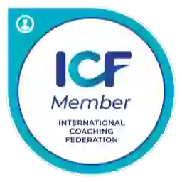
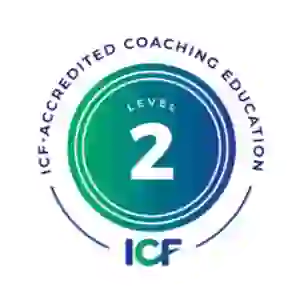
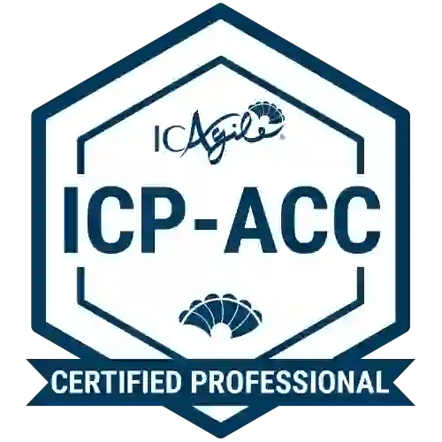
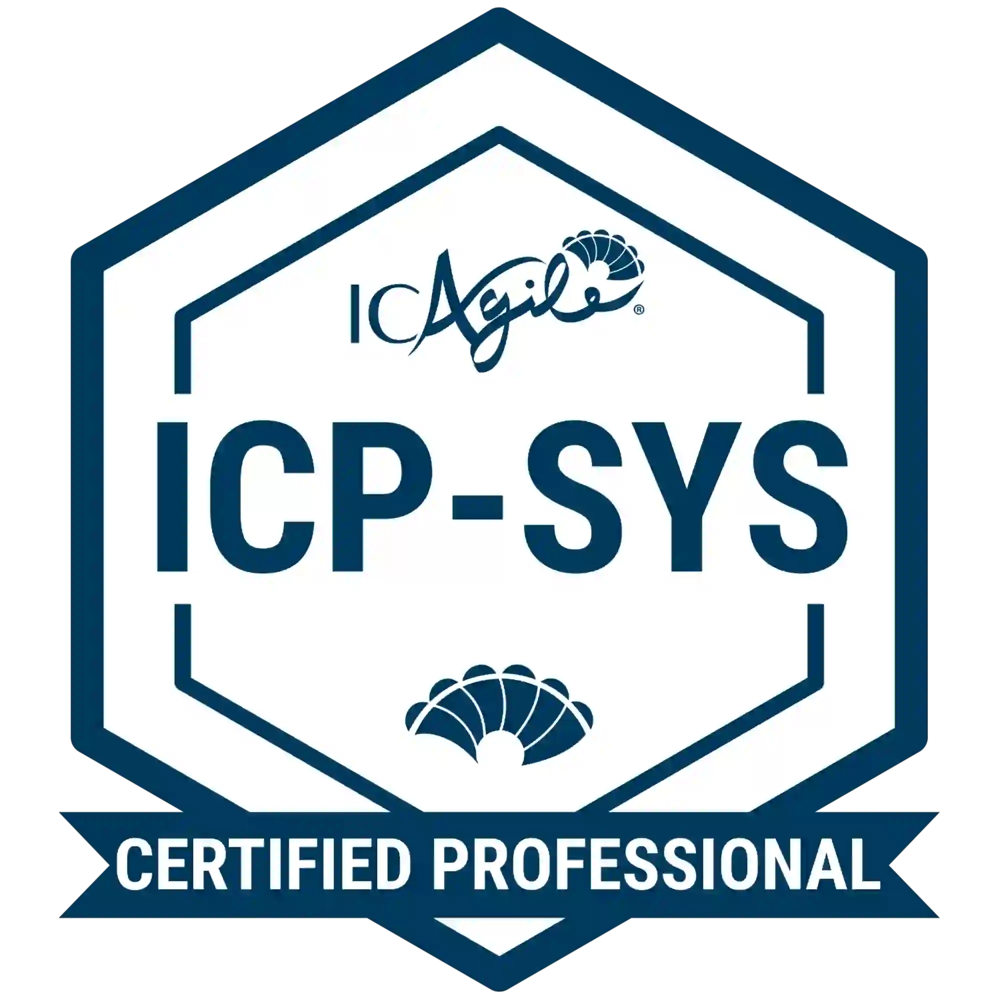

Alineo **estrategia y ejecución** con Coaching Sistémico, OKRs y Kanban. Para líderes y equipos que necesitan previsibilidad, alto foco y crecimiento sostenible.
Confían en mi experiencia:
   
Adrián Deyme
Coach Ejecutivo & Arquitecto Organizacional
La mayoría de los líderes tiene una **estrategia brillante** que se queda en un PDF. El equipo está ocupado, pero la ejecución es caótica, los resultados son impredecibles y el **foco se disuelve** en el ruido diario.
Mi rol es ser el **arquitecto de tu sistema de ejecución.** Utilizo un enfoque integral y sistémico que combina la claridad de **OKRs**, la fluidez de **Kanban** y la estructura modular de **unFIX** con la fuerza transformadora del **Coaching de Liderazgo**. No solo optimizo procesos; **rediseño la forma en que el trabajo fluye** desde la idea hasta el resultado.
Soy un socio para líderes que están listos para **dejar de apagar incendios** y empezar a construir una máquina de resultados.
Diseño e implementación de Objetivos y Resultados Clave (OKRs) para crear una cadena de valor inquebrantable desde el CEO hasta el equipo de ventas/desarrollo.
Implementación de sistemas visuales de flujo (Kanban) para reducir el trabajo en curso, medir la previsibilidad y eliminar los cuellos de botella del equipo.
Sesiones de coaching ejecutivo para líderes que necesitan transformar patrones culturales, delegar con autoridad y construir estructuras modulares (unFIX).
Descarga la lista de chequeo de 10 puntos para evaluar la previsibilidad de tu sistema de trabajo (OKRs, Kanban y Liderazgo).
Cargando publicaciones...
Si tu empresa no puede predecir el 90% de sus resultados trimestrales, **tienes un problema de sistema, no de personas.** Comencemos con un diagnóstico 100% gratuito.
Agenda tu Diagnóstico Gratuito de 30 minutos